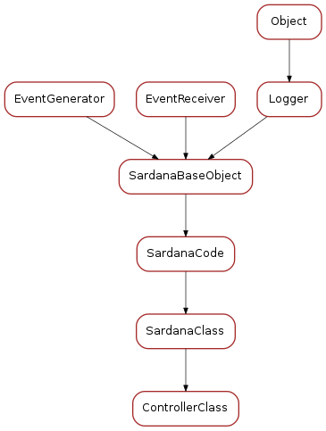

poolmetacontroller¶
This module is part of the Python Pool libray. It defines the base classes for
Classes
DataInfo¶


ControllerLib¶

-
class
ControllerLibrary(**kwargs)[source]¶ Bases:
sardana.sardanameta.SardanaLibraryObject representing a python module containning controller classes. Public members:
- module - reference to python module
- f_path - complete (absolute) path and filename
- f_name - filename (including file extension)
- path - complete (absolute) path
- name - module name (without file extension)
- controller_list - list<ControllerClass>
- exc_info - exception information if an error occured when loading
- the module
-
add_controller(meta_class)¶ Adds a new :class:~`sardana.sardanameta.SardanaClass` to this library.
Parameters: meta_class (:class:~`sardana.sardanameta.SardanaClass`) – the meta class to be added to this library
-
get_controller(meta_class_name)¶ Returns a :class:~`sardana.sardanameta.SardanaClass` for the given meta class name or None if the meta class does not exist in this library.
Parameters: meta_class_name ( str) – the meta class nameReturns: a meta class or None Return type: :class:~`sardana.sardanameta.SardanaClass`
-
get_controllers()¶ Returns a sequence of the meta classes that belong to this library.
Returns: a sequence of meta classes that belong to this library Return type: seq<:class:~`sardana.sardanameta.SardanaClass`>
-
has_controller(meta_class_name)¶ Returns True if the given meta class name belongs to this library or False otherwise.
Parameters: meta_class_name ( str) – the meta class nameReturns: True if the given meta class name belongs to this library or False otherwise Return type: bool
-
controllers¶
ControllerClass¶
-
class
ControllerClass(**kwargs)[source]¶ Bases:
sardana.sardanameta.SardanaClassObject representing a python controller class. Public members:
- name - class name
- klass - python class object
- lib - ControllerLibrary object representing the module where the controller is.
-
controller_class¶
-
gender¶
-
model¶
-
organization¶
Constants
-
CONTROLLER_TEMPLATE= 'class @controller_name@(@controller_type@):\n """@controller_name@ description."""\n\n'¶ String containing template code for a controller class
-
CTRL_TYPE_MAP= {2: <class 'sardana.pool.poolcontroller.PoolController'>, 3: <class 'sardana.pool.poolcontroller.PoolController'>, 5: <class 'sardana.pool.poolcontroller.PoolController'>, 6: <class 'sardana.pool.poolcontroller.PoolController'>, 8: <class 'sardana.pool.poolcontroller.PoolController'>, 9: <class 'sardana.pool.poolcontroller.PoolController'>, 10: <class 'sardana.pool.poolcontroller.PoolPseudoMotorController'>, 11: <class 'sardana.pool.poolcontroller.PoolPseudoCounterController'>}¶ a dictionary dict<
ElementType, class> mapping element type enumeration with the corresponding controller pool class (PoolControlleror sub-class of it).
-
TYPE_MAP= {1: ('Controller', 'Controller', {2: <class 'sardana.pool.poolcontroller.PoolController'>, 3: <class 'sardana.pool.poolcontroller.PoolController'>, 5: <class 'sardana.pool.poolcontroller.PoolController'>, 6: <class 'sardana.pool.poolcontroller.PoolController'>, 8: <class 'sardana.pool.poolcontroller.PoolController'>, 9: <class 'sardana.pool.poolcontroller.PoolController'>, 10: <class 'sardana.pool.poolcontroller.PoolPseudoMotorController'>, 11: <class 'sardana.pool.poolcontroller.PoolPseudoCounterController'>}, 'controller/{klass}/{name}', <class 'sardana.pool.controller.Controller'>), 2: ('Motor', 'Motor', <class 'sardana.pool.poolmotor.PoolMotor'>, 'motor/{ctrl_name}/{axis}', <class 'sardana.pool.controller.MotorController'>), 3: ('CTExpChannel', 'ExpChannel', <class 'sardana.pool.poolcountertimer.PoolCounterTimer'>, 'expchan/{ctrl_name}/{axis}', <class 'sardana.pool.controller.CounterTimerController'>), 4: ('ZeroDExpChannel', 'ExpChannel', <class 'sardana.pool.poolzerodexpchannel.Pool0DExpChannel'>, 'expchan/{ctrl_name}/{axis}', <class 'sardana.pool.controller.ZeroDController'>), 5: ('OneDExpChannel', 'ExpChannel', <class 'sardana.pool.poolonedexpchannel.Pool1DExpChannel'>, 'expchan/{ctrl_name}/{axis}', <class 'sardana.pool.controller.OneDController'>), 6: ('TwoDExpChannel', 'ExpChannel', <class 'sardana.pool.pooltwodexpchannel.Pool2DExpChannel'>, 'expchan/{ctrl_name}/{axis}', <class 'sardana.pool.controller.TwoDController'>), 8: ('IORegister', 'IORegister', <class 'sardana.pool.poolioregister.PoolIORegister'>, 'ioregister/{ctrl_name}/{axis}', <class 'sardana.pool.controller.IORegisterController'>), 9: ('TriggerGate', 'TriggerGate', <class 'sardana.pool.pooltriggergate.PoolTriggerGate'>, 'triggergate/{ctrl_name}/{axis}', <class 'sardana.pool.controller.TriggerGateController'>), 10: ('PseudoMotor', 'Motor', <class 'sardana.pool.poolpseudomotor.PoolPseudoMotor'>, 'pm/{ctrl_name}/{axis}', <class 'sardana.pool.controller.PseudoMotorController'>), 11: ('PseudoCounter', 'ExpChannel', <class 'sardana.pool.poolpseudocounter.PoolPseudoCounter'>, 'pc/{ctrl_name}/{axis}', <class 'sardana.pool.controller.PseudoCounterController'>), 13: ('MotorGroup', 'MotorGroup', <class 'sardana.pool.poolmotorgroup.PoolMotorGroup'>, 'mg/{pool_name}/{name}', None), 14: ('MeasurementGroup', 'MeasurementGroup', <class 'sardana.pool.poolmeasurementgroup.PoolMeasurementGroup'>, 'mntgrp/{pool_name}/{name}', None), 15: ('Instrument', 'Instrument', <class 'sardana.pool.poolinstrument.PoolInstrument'>, '{full_name}', None)}¶ dictionary dict<
ElementType,tuple> where tuple is a sequence:- type string representation
- family
- internal pool class
- automatic full name
- controller class
-
TYPE_MAP_OBJ= {1: <sardana.pool.poolmetacontroller.TypeData object>, 2: <sardana.pool.poolmetacontroller.TypeData object>, 3: <sardana.pool.poolmetacontroller.TypeData object>, 4: <sardana.pool.poolmetacontroller.TypeData object>, 5: <sardana.pool.poolmetacontroller.TypeData object>, 6: <sardana.pool.poolmetacontroller.TypeData object>, 8: <sardana.pool.poolmetacontroller.TypeData object>, 9: <sardana.pool.poolmetacontroller.TypeData object>, 10: <sardana.pool.poolmetacontroller.TypeData object>, 11: <sardana.pool.poolmetacontroller.TypeData object>, 13: <sardana.pool.poolmetacontroller.TypeData object>, 14: <sardana.pool.poolmetacontroller.TypeData object>, 15: <sardana.pool.poolmetacontroller.TypeData object>}¶ dictionary dict<
ElementType,TypeData>